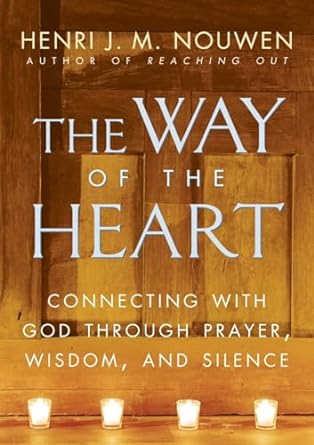

Welcome!
Being part of a church is all about connecting…connecting with God, connecting with others, even connecting to ourselves! We connect by sharing the mundane things of our lives; we read the Bible and look for ways to apply it; we sing songs to God and sense – at least sometimes – that he hears us; we pray for one another and know that we are not alone…that people care about us…that Jesus cares about us. These connections give us strength to face the challenges we encounter each day.
SUNDAYS
We meet on Sunday mornings from 10 to 11:15am. Sometimes we meet virtually; other times we meet in person. We find that this flexibility helps many of us to stay connected.
OTHER WAYS TO CONNECT
In addition to Sunday mornings, we also have a Run Club that meets throughout the week and a book club that meets periodically.
RUN CLUB
In addition to Sunday mornings, we also have a Run Club that meets throughout the week and a book club that meets periodically.
We encourage people to develop their interests and pursue their passions. Someone in El Camino enjoys running and wanted to invite others to join her...so,,,she started a running club. It began with just 2 or 3 people jogging on Saturday mornings. Today, the club has runs practically every day of the week, with dozens of people participating. If you would like more info, check-out the Meet-Up: Run Club.
BOOK CLUB
We are currently reading "The Way of the Heart" by Henri Nouwen. We're planning to get together for a book club conversation this summer (date TBD).

HELPING OTHERS LOCALLY AND GLOBALLY
In the Bible, there is a famous character in the Old Testament. His name was Abraham and he was known as the friend of God. In one of the conversations between God and Abraham, God tells him, "I will bless you...and you will be a blessing to others." (Genesis 12:2) We believe that God has blessed us so that we, too, might be a blessing to others. To that end, we participate in different activities designed to help others. For example, we have helped send a trainer to Haiti to help Haitians develop their job skills; distributed bicycles to people who lost everything in the Santa Rosa fires; work with other local Vineyard churches in Mexico, California and New England to send people and finances to help develop caring Christian communities in Spain; provided financial assistance to a home for people with disabilities and lunches to school children during the summer.
THE VINEYARD MOVEMENT
El Camino Vineyard Church is part of the Vineyard family of churches. For more info, go to: Vineyard USA
FOR MORE INFORMATION
Please contact Randy Chase